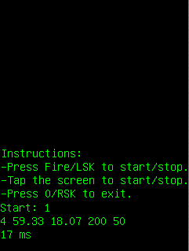

This application tests the on-board GPS functionality of the phone, via the MoSync Location API.

This example is included in the MoSync SDK installation in the /examples folder. For information on importing the examples into your workspace, see Importing the Examples.
Note: This application will only work successfully on a device with activated GPS capabilities. It will run on the MoSync emulator, but no GPS service will be detected.
When the application starts, instrcutions are displayed. Tap the screen (or press the fire button of left softkey) to start the GPS location detection. A "Start" message and return code will be displayed: if GPS is available the return code 1 will be shown. If the device does not have GPS capabilities (including the MoSync MoRE emulator), or the GPS function is not activated on the device, the return code -1 is displayed.
While location detection is active, the following data is shown, periodically refreshed: